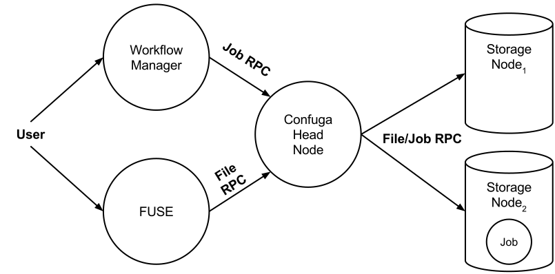

Last edited: May 2015
Confuga is Copyright (C) 2015 The University of Notre Dame.
All rights reserved.
This software is distributed under the GNU General Public License.
See the file COPYING for details.
Please use the following citation for Confuga in a scientific publication:
Confuga is an active storage cluster file system designed for executing DAG-structured scientific workflows. It is used as a collaborative distributed file system and as a platform for execution of scientific workflows with full data locality for all job dependencies.
A high-level perspective of Confuga is visualized in the figure below.
Confuga is composed of a head node and multiple storage nodes. The head node acts as the metadata server and job scheduler for the cluster. Users interact with Confuga using the head node. All file and job operations go through the head node.
A Confuga cluster can be setup as an ordinary user or maintained as a dedicated service within the cluster. The head node and storage nodes run the Chirp file system service. Users may interact with Confuga using Chirp's client toolset chirp(1), Parrot parrot_run(1), or FUSE chirp_fuse(1).
Confuga manages the details of scheduling and executing jobs for you. However, it does not concern itself with job ordering; it appears as a simple batch execution platform. We recommend using a high-level workflow execution system like Makeflow to manage your workflow and to handle the details of submitting jobs. However, you can also program job submmission directly using the Chirp job protocol.
Confuga is designed to exploit the unique parameters and characteristics of POSIX scientific workflows. Jobs are single task POSIX applications that are expressed with all input files and all output files. Confuga uses this restricted job specification to achieve performance and to control load within the cluster.
To get started using Confuga, please begin by installing CCTools on your system. When you are ready, proceed with the Getting Started section below.
Getting a Confuga cluster up and running is extremely simple. There are three services you need to start to get an operational cluster:
Let's get started quickly by setting up a 2 storage node test cluster on your local workstation. Because we are running these storage nodes on localhost, we use a self-hosted catalog. Otherwise, the head node will not be able to match storage nodes (localhost is ambiguous in a global list of servers).
The Catalog:
$ catalog_server --history=catalog.history \
--update-log=catalog.update \
--interface=127.0.0.1 \
&
Storage Node 1:
$ chirp_server \
--advertise=localhost \
--catalog-name=localhost \
--catalog-update=10s \
--interface=127.0.0.1 \
--jobs \
--job-concurrency=10 \
--root=./root.1 \
--port=9001 \
--project-name=`whoami`-test \
--transient=./tran.1 \
&
Storage Node 2:
$ chirp_server \
--advertise=localhost \
--catalog-name=localhost \
--catalog-update=10s \
--interface=127.0.0.1 \
--jobs \
--job-concurrency=10 \
--root=./root.2 \
--port=9002 \
--project-name=`whoami`-test \
--transient=./tran.2 \
&
The Head Node:
$ chirp_server \
--advertise=localhost \
--catalog-name=localhost \
--catalog-update=30s \
--debug=confuga \
--jobs \
--port=9000 \
--project-name=`whoami`-test \
--root='confuga://./confuga.root/?auth=unix&nodes=node:chirp://localhost:9001/,chirp://localhost:9002/'
Confuga will output debug information to your terminal, so you can see what is happening. In another terminal, use chirp_status to query the catalog allowing you to see the status of the cluster:
$ chirp_status --catalog=localhost --server-project=`whoami`-test
TYPE NAME PORT OWNER VERSION TOTAL AVAIL
chirp localhost.localdomain 9002 batrick 4.4.0 81.6 GB 17.0 GB
chirp localhost.localdomain 9001 batrick 4.4.0 81.6 GB 17.0 GB
chirp localhost.localdomain 9094 batrick 4.4.0 163.1 GB 34.0 GB
This example cluster also appears at the end of the Confuga manpage confuga(1).
In another terminal, we can run the standard Makeflow example against the cluster to confirm everything works. This example Makeflow is distributed with CCTools in makeflow/example/example.makeflow.
$ makeflow --batch-type=chirp --working-dir=chirp://localhost:9000/ makeflow/example/example.makeflow
parsing makeflow/example/example.makeflow...
checking makeflow/example/example.makeflow for consistency...
makeflow/example/example.makeflow has 6 rules.
recovering from log file makeflow/example/example.makeflow.makeflowlog...
starting workflow....
submitting job: /usr/bin/curl -o capitol.jpg http://ccl.cse.nd.edu/images/capitol.jpg
submitted job 14
job 14 completed
submitting job: /usr/bin/convert -swirl 360 capitol.jpg capitol.360.jpg
submitted job 15
submitting job: /usr/bin/convert -swirl 270 capitol.jpg capitol.270.jpg
submitted job 16
submitting job: /usr/bin/convert -swirl 180 capitol.jpg capitol.180.jpg
submitted job 17
submitting job: /usr/bin/convert -swirl 90 capitol.jpg capitol.90.jpg
submitted job 18
job 15 completed
job 16 completed
job 17 completed
job 18 completed
submitting job: /usr/bin/convert -delay 10 -loop 0 capitol.jpg capitol.90.jpg capitol.180.jpg capitol.270.jpg capitol.360.jpg capitol.270.jpg capitol.180.jpg capitol.90.jpg capitol.montage.gif
submitted job 19
job 19 completed
nothing left to do.
You can then view the result by fetching the output and using your favorite gif viewing program:
$ chirp localhost get /capitol.montage.gif
903.4 KB read in 0.05s (16.1 MB/s)
$ $ display ./capitol.montage.gif
You can also achieve the same thing using Parrot:
$ parrot_run display /chirp/localhost/capitol.montage.gif
Confuga uses regular Chirp servers as storage nodes. Each storage node is specified using the nodes Confuga option. All storage node Chirp servers must be run with:
These options are also suggested but not required:
You must also ensure that the storage nodes and the Confuga head node are using the same catalog_server(1). By default, this should be the case.
A Chirp server acting as the Confuga head node uses normal chirp_server(1) options. In order to run the Chirp server as the Confuga head node, use the --root switch with the Confuga URI. You must also enable job execution with the --jobs switch.
The format for the Confuga URI is:
confuga:///path/to/workspace?option1=value&option2=value
The workspace path is the location Confuga maintains metadata and databases for the head node. Confuga specific options are also passed through the URI. The two primary options are documented below.
Please refer to Confuga's man page confuga(1) for a complete and up-to-date listing of Confuga's options.
To execute jobs on Confuga, you must first place all of the jobs data requirements, including the executable itself, within Confuga. This can be done using Chirp's client toolset chirp(1), Parrot parrot_run(1), or FUSE chirp_fuse(1).
Once data is located on Confuga, you may begin executing jobs. Normally, you will construct a workflow that executes within a workflow namespace within Confuga. In simpler terms, this is just the root directory your workflow operates in, probably your home directory on Confuga. For example, if you place your files in Confuga like so:
$ chirp confuga.name.org put workflow /users/me/
and your workflow looks something like this:
simulation.txt: bin/sim params
bin/sim -i params
The executable used by Confuga will be /users/me/workflow/bin/sim and the parameter file will be /users/me/workflow/params. Likewise, after the job completes, the output will be placed /users/me/workflow/simulation.txt. As you may tell, the namespace your workflow is operating in is /users/me/workflow. You will give this namespace to the workflow manager you use along with your workflow. It describes the mapping relationship between the namespace the job executes within and the namespace the workflow executes within.
As an example, you might run Makeflow for the above situation like so:
$ makeflow -T chirp --working-dir=chirp://confuga.name.org/users/me/workflow
Jobs are executed using the Chirp job protocol. No special modifications are required to submit jobs to Confuga. We recommend using the Makeflow workflow manager but you may also program your own jobs using this protocol if so desired.
There are three authentication realms to consider for a Confuga cluster: user to head node, head node to storage node, and storage node to storage node authentication.
The head node is accessed by clients just like a regular Chirp server. Therefore, you authenticate with Confuga in the same way as Chirp. You may enable authentication mechanisms on the head node using the --auth switch, documented in chirp_server(1).
Head node authentication with storage nodes is controlled via the auth Confuga option. Confuga will uses these authentication mechanisms to authenticate with its storage nodes.
Lastly, Confuga handles the details of storage node to storage node authentication. This is done using Chirp's ticket authentication metchanism. You as a user do not need to do anything special to get this working beyond enabling ticket authentication (--auth=ticket) on each storage node.
Confuga offers the same strong authorization system as Chirp. This includes per-directory access control lists (ACL). For information on authorization controls in Chirp, please see the Authorization section in the Chirp manual.
Confuga does not save the stdout or stderr of jobs. If you need to debug your jobs by examining these files, you must explicitly save them. If you are using Makeflow to submit jobs to Confuga, you may do this simply by using Makeflow's --wrapper option to save these stdout and stderr. For example:
$ makeflow --batch-type=chirp \\
--working-dir=chirp://confuga.example.com/ \\
--wrapper=$'{\\n{}\\n} > stdout.%% 2> stderr.%%' \\
--wrapper-output='stdout.%%' \\
--wrapper-output='stderr.%%'
Confuga is a beta quality software and is presently missing a few features that will be addressed in future releases: